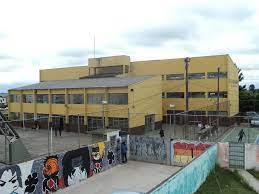

- NOSSA ESOLA
 Nossa escola está localizada na Rua Cezar Carelli, 00497- Iguacu, Fazenda Rio Grande - Paraná.
Considerada uma das melhores instituições de ensino do município, a escola conta com o Ensino Fundamental II, Ensino Médio e Curso de Formação de Docentes.
Nossa escola está localizada na Rua Cezar Carelli, 00497- Iguacu, Fazenda Rio Grande - Paraná.
Considerada uma das melhores instituições de ensino do município, a escola conta com o Ensino Fundamental II, Ensino Médio e Curso de Formação de Docentes.
- NOSSA TURMA
Atualmente conta com 36 alunos:
Nossa escola está localizada na Rua Cezar Carelli, 00497- Iguacu, Fazenda Rio Grande - Paraná.
Considerada uma das melhores instituições de ensino do município, a escola conta com o Ensino Fundamental II, Ensino Médio e Curso de Formação de Docentes.